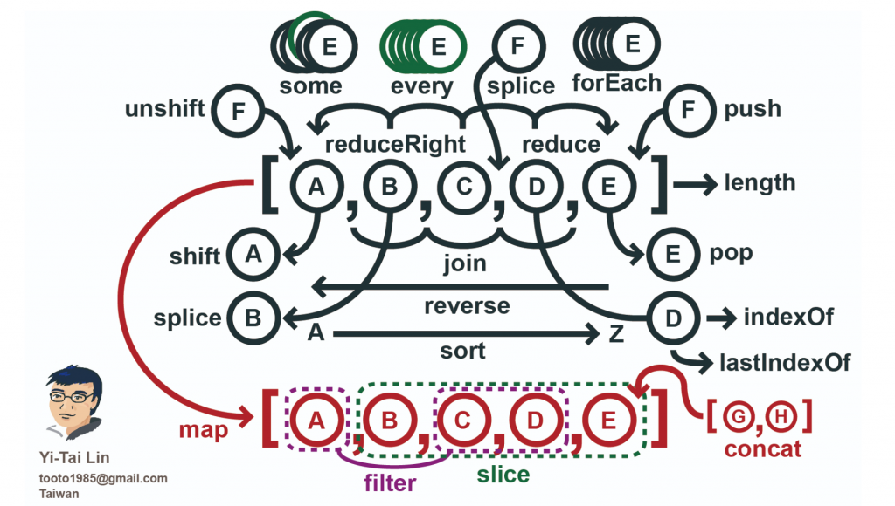
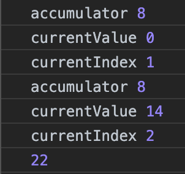
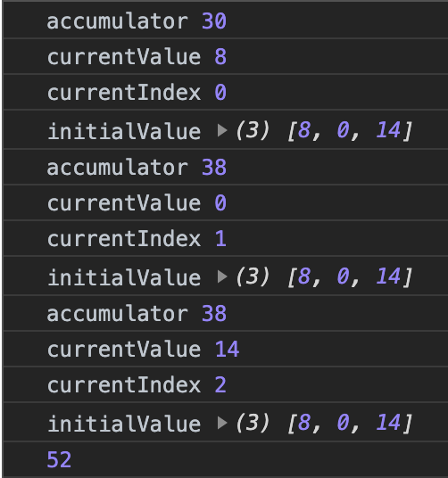
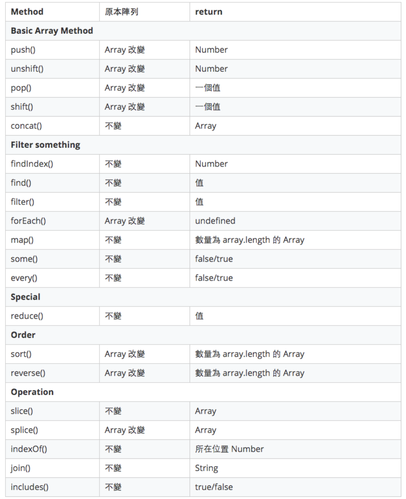

預設資料
1 | const temp = [1, 2, 3]; |
Array.prototype.push(elementN)
1 | const newArray = temp.push(6); |
push 後會回傳 length
Array.prototype.unshift(elementN)
1 | const newArray = temp.unshift(6); |
unshift 後會回傳 length
Array.prototype.pop()
1 | const newArray = temp.pop(); |
移除原本陣列最後面的第一個值，回傳被移除掉的那個值
Array.prototype.shift()
1 | const newArray = temp.shift(); |
移除原本陣列最前面的第一個值，回傳被移除掉的那個值
Array.prototype.concat()
1 | const newArray = temp.concat([4, 5, 6]) |
把兩個陣列合併在一起，並回傳新陣列
預設資料
1 | const inventors = [ |
Array.prototype.findIndex(item, index, array)
1 | const result = inventors.findIndex(item => { |
回傳第一個符合條件的位置 index，若都找不到則回傳 -1
Array.prototype.find(item, index, array)
1 | const result = inventors.find(item => { |
回傳一個值，且是第一個抓到條件為 true 的值，若都找不到則回傳 undefined
Array.prototype.filter(item, index, array)
1 | const result = inventors.filter(item => { |
回傳一個陣列，只要條件為 true 的就會包含在此陣列，適合拿來搜尋
Array.prototype.forEach(item, index, array)
1 | const forEachInventors = inventors.forEach(item => { |
forEach 不會回傳任何東西，單純只執行原本陣列裡的事
Array.prototype.map(item, index, array)
1 | const mapInventors = inventors.map(item => { |
將條件運算後重新組合回傳一個數量等於 array.length 的陣列，陣列內容只有 true & false
Array.prototype.some(item, index, array)
1 | const someInventors = inventors.some(function(item){ |
回傳一個 Boolean，只要部分符合就回傳 true。它不會 Array 全部找完，只要一找到相符的直就跳出
Array.prototype.every(item, index, array)
1 | const everyInventors = inventors.every(function(item){ |
回傳一個 Boolean，需要全部符合才回傳 true，部分符合會回傳 false
Array.prototype.reduce(accumulator, currentValue, currentIndex, array [, initialValue])
1 | const special = [8, 0, 14]; |

1 | const special = [8, 0, 14]; |

Array.prototype.sort(compareFunction)
特別要提得是，< 10 的 array 會是 stable 排序法， > 10 會是不穩定的排序法
1 | const fruit = ['cherries', 'apples', 'bananas']; |
1 | function compare(a, b) { |
Array.prototype.reverse()
1 | const a = ['one', 'two', 'three']; |
會改變原來的陣列 !!
Array.prototype.slice(start, end)
1 | const my_array = [5, 1, 3, 8, 6, 0] |
Slice 就是切，把 array 頭尾切兩刀。回傳在 start(包含) 跟 end 之間的陣列。經過 slice 後原本陣列不會改變
Array.prototype.splice(start, deleteCount, item1, item2, …)
1 | // 假如只有 splice(start)，這時會跟 slice 行為一樣 |
回傳被移掉的值放在陣列裡。
splice 乍看下跟 slice 有點像，但其實幾乎完全相反(驚)。slice 是取 start end 裡的東西，而 splice 是 return 中間被移掉的東西， splice 會影響原本陣列。
新增的 item1、item2 只會影響本來陣列，並不會回傳到新的陣列裡
Splice 是拼接的意思你不但可以切掉某塊還可以塞東西進去。
Array.prototype.indexOf(searchElement)
1 | const indexArray = my_array.indexOf(3) // 2 |
回傳所在位置的 index，如果找不到會回傳 -1，不會改變原陣列
Array.prototype.join(separator)
1 | const joinArray = my_array.join(‘-') |
把所有陣列裡的值加上 separator，回傳一個字串，不會改變原陣列
Array.prototype.includes(searchElement, fromIndex)
1 | const my_array = [5, 1, 3, 8, 6, 0] |
看 searchElement 有沒有在 array 裡，回傳 Boolean，不會改變原陣列
總結

參考
陣列 Array - iT 邦幫忙::一起幫忙解決難題，拯救 IT 人的一天
GitHub - tooto1985/js-array-operations: 20 kinds of methods to get to know a JavaScript array operations.
- Post title：【Javascript】Array-methods
- Post author：Neil Yang
- Create time：2019-11-19 00:00:00
- Post link：https://des86532.github.io/2019/11/19/Javascript/array-methods/
- Copyright Notice：All articles in this blog are licensed under BY-NC-SA unless stating additionally.